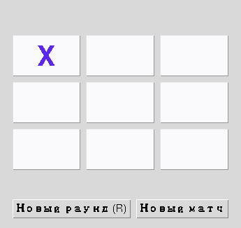
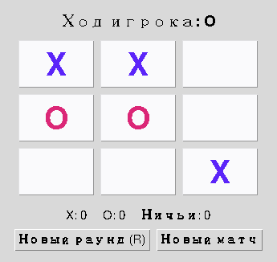

Глава 17 · Модель и правила
Модель игрового состояния
Tkinter отображает игру и доставляет ввод. Игровое СОСТОЯНИЕ — отдельная вещь.
Что вообще должна помнить программа?
Виджеты — НЕ каноническое игровое состояние
Кнопки на экране ОТОБРАЖАЮТ состояние — они не являются им. Если наведение мыши временно рисует «X» на кнопке (раздел 17.23), это не значит, что ход сделан — настоящее состояние живёт отдельно от того, что нарисовано на экране прямо сейчас.
Прототип: state в глобальных переменных
Раздел 17.3 использовал ровно такой подход:
prototip_globals.py
tekuschij_igrok = "X"
polya = []
igra_okonchena = FalseПрототип: сначала делаем состояние видимым
Глобальные переменные — приемлемый выбор для самого первого маленького прототипа: их легко читать и легко объяснить. Проблема появляется, когда проект растёт — глобальные переменные создают скрытые связи между функциями, которые неявно ожидают, что кто-то другой уже их изменил в правильном порядке. Это не значит «глобальные переменные — зло»: это значит, что у них есть компромисс между простотой и сопровождаемостью, который стоит замечать.
Путь этой главы
От глобальных переменных к GameState
V1 — глобальные (17.3)
3 отдельные переменные
просто, но растёт бесконтрольно
V2 — словарь
{'board': [...], ...}
один объект вместо трёх переменных
V3 — GameState (17.19)
@dataclass
типизировано, читаемо, тестируемо
Одно состояние — разные видимые моменты партии



Практика: моделируем игровое состояние
Автоматическая проверка — строим и проверяем словарь-состояние без Tkinter